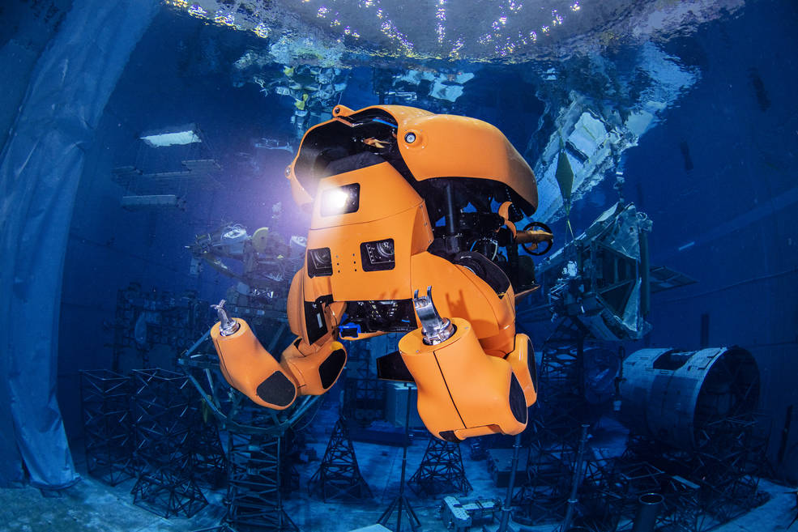
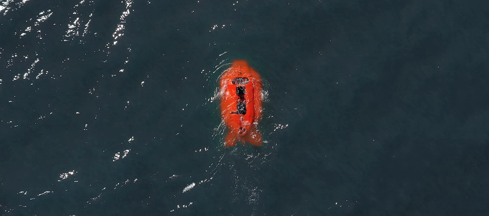
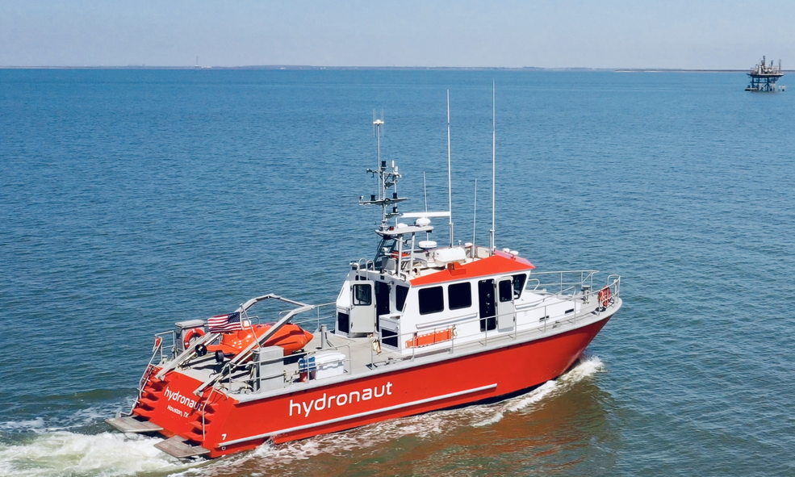

O robô Aquanaut da Nauticus Robotics pode nadar até um destino e realizar tarefas com supervisão mínima, economizando dinheiro para operações offshore de poços de petróleo e turbinas eólicas a fazendas de peixes e muito mais. Créditos: Nauticus Robotics Inc.
Qual é a diferença entre o espaço profundo e o mar profundo? Para um robô, a resposta é: não muito. Ambos os ambientes são difíceis e exigentes e, mais importante, ambos estão longe do operador da máquina.
É por isso que uma equipe de roboticistas do Johnson Space Center da NASA em Houston decidiu aplicar seus conhecimentos para projetar um robô submersível que muda de forma e reduzirá custos para as indústrias marítimas.
“O que a NASA nos ensinou é unir autonomia robusta de software com uma morfologia de hardware capaz e implantá-la em um ambiente remoto”, disse Nic Radford, fundador, presidente do conselho, presidente e CEO da Nauticus Robotics Inc., com sede em Houston. na Johnson, Radford foi, entre outras funções, vice-gerente de projeto e engenheiro-chefe do robô humanóide Robonauta 2. Agora, mais de 20 engenheiros que trabalharam nesse projeto e outros robôs da NASA se juntaram à equipe de 80 pessoas que ele montou na Nauticus.
Esteja um robô trabalhando no espaço ou no fundo do mar, o operador está longe, com comunicação e conhecimento limitados dos arredores do robô, disse Radford. “Mesmo que você o coloque na estação espacial e o controle do solo, não há rede de dados de alta velocidade. Falar com a estação espacial é mais parecido com usar uma conexão discada.” Portanto, o robô precisa sentir e entender seu ambiente, navegando por obstáculos e manipulando objetos com o mínimo de intervenção do operador.
Para o Robonauta 2, isso significava que os engenheiros da Johnson precisavam desenvolver não apenas hardware avançado, como mãos movidas a tendões, articulações elásticas e células de carga miniaturizadas, mas também sistemas de visão, sensores de força e sensores infravermelhos para coletar informações, bem como reconhecimento de imagem. software, algoritmos de controle e controladores conjuntos de ultra-alta velocidade para processar e agir sobre esses dados.
Construído sob uma parceria entre a NASA e a General Motors (GM), o Robonauta 2 provou ser um assistente de astronauta a bordo da Estação Espacial Internacional. Mas também foi um teste para todos esses sistemas robóticos avançados. A NASA quer desenvolver robôs para realizar trabalhos perigosos no espaço, executar “missões precursoras” que preparam a chegada de astronautas humanos e manter instalações como a planejada estação lunar Gateway quando os astronautas não estiverem por perto. A GM, por sua vez, queria explorar a robótica que pudesse ajudar os trabalhadores da fábrica. O projeto produziu cerca de 50 patentes, várias das quais já foram comercializadas como uma luva robótica que a GM e outras estão usando no local de trabalho.
Cortando o Cordão
Quando chega ao seu local de trabalho, o Aquanaut, visto aqui durante o teste na piscina gigante do Johnson's Neutral Buoyancy Lab, abre sua concha e vira seus braços, garras e vários sensores para o trabalho. Créditos: Nauticus Robotics Inc.
Ao contrário de um robô no espaço, os robôs de águas profundas podem ser conectados aos operadores com um cabo para permitir a transferência de dados em alta velocidade e controle próximo. Mas Radford disse que isso tem o preço de contratar e operar uma enorme embarcação de apoio na superfície, no valor de cerca de US$ 100.000 e 70 toneladas métricas de emissões de gases de efeito estufa por dia.
A Nauticus está eliminando esse cordão permitindo que seus robôs trabalhem com supervisão mínima de um centro de controle em uma costa distante.
Laranja brilhante, totalmente elétrico e do tamanho de um carro esportivo, Aquanaut, o robô de assinatura da empresa, se assemelha a um torpedo movido a hélice enquanto dirige para seu destino. Nesse ponto, seu invólucro se abre e o nariz vira para cima para revelar um conjunto de câmeras e outros sensores, agora voltados para a frente. Dois braços se abrem, terminando em garras que podem ser equipadas com diferentes ferramentas.
Ao viajar para o seu destino, o Aquanaut se assemelha a um torpedo elegante movido a hélice. Créditos: Nauticus Robotics Inc.
Para testar o robô em 2019, a equipe voltou a Johnson e usou a gigantesca piscina de treinamento de astronautas no Neutral Buoyancy Lab do centro, onde o robô poderia experimentar seus sistemas à vista de operadores e câmeras.
Um Factotum Flutuante
Aquanaut é projetado para versatilidade, e Radford observou que há muitos trabalhos diferentes para um robô submarino. A produção offshore de petróleo e gás é um alvo óbvio porque requer uma grande quantidade de equipamentos subaquáticos que precisam de inspeção e manutenção. Mas a indústria oceânica que mais cresce é a energia eólica. Cerca de 25.000 turbinas offshore estão planejadas para operação até 2030, disse Radford, e todas elas exigirão manutenção e inspeção.
Com as populações de peixes selvagens diminuindo acentuadamente, a aquicultura – a criação de peixes, camarões e outros frutos do mar – está crescendo rapidamente, e as redes e gaiolas nessas fazendas subaquáticas precisam de limpeza e inspeção regulares, disse Radford.
Outros empregos em potencial incluem gerenciamento de portos, manutenção de cabos de telecomunicações submarinos, mineração offshore de materiais raros e aplicações de defesa. Radford estimou a economia marítima total em cerca de US$ 2,5 trilhões.
No início de 2022, a Nauticus havia produzido dois Aquanauts e planejava construir mais 20 nos três anos seguintes. A empresa os usará principalmente para fornecer serviços acessíveis, em vez de vendê-los. Para operações que requerem apoio de superfície, a Nauticus está construindo um barco chamado Hydronaut que pode ser operado remotamente ou navegar sozinho.
Em vez da enorme embarcação de apoio e tripulação necessária para operar robôs subaquáticos por meio de cabos, o Aquanaut autônomo pode ser transportado para um local de trabalho pelo pequeno barco Hydronaut da Nauticus, que pode navegar com ou sem tripulação. Créditos: Nauticus Robotics Inc.
Ao aplicar soluções espaciais para problemas marítimos, Radford planeja tornar o nome Nauticus sinônimo de robótica oceânica, disse ele. “O espaço é incrível porque parece existencial – está lá fora e as pessoas querem explorá-lo. Mas também existem muitos desafios reais bem aqui no fundo do oceano, e poderíamos fazer mais inovações na ‘economia azul’.”
A NASA tem uma longa história de transferência de tecnologia para o setor privado . A publicação Spinoff da agência traça o perfil das tecnologias da NASA que se transformaram em produtos e serviços comerciais, demonstrando os benefícios mais amplos do investimento da América em seu programa espacial. Spinoff é uma publicação do programa de Transferência de Tecnologia no Diretório de Missão de Tecnologia Espacial (STMD) da NASA.